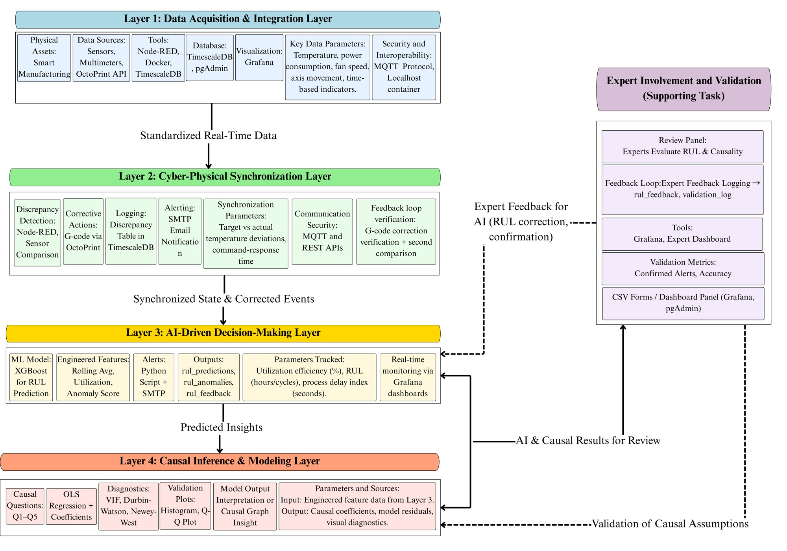
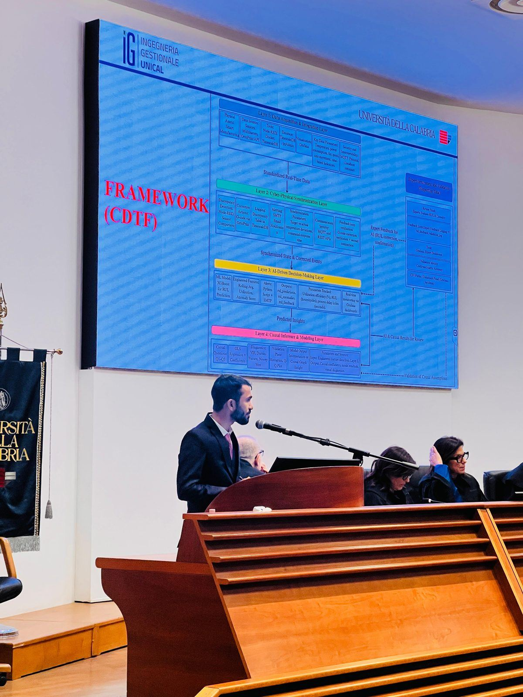
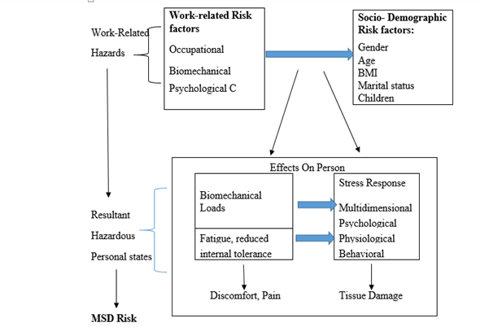
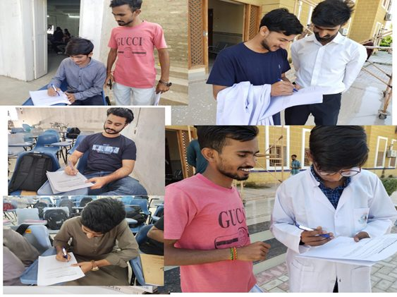

Digital Twins & Cyber-Physical Systems
Real-time, causal and human digital twins that synchronise physical assets with virtual models for monitoring, prediction, root-cause analysis and corrective action.
Research Fellow · MSC-LES Lab, University of Calabria
Industrial & Management Engineer · Researcher in Digital Twins, Simulation & AI
I design digital twins, discrete-event simulation models and reinforcement-learning decision tools that make manufacturing, healthcare and supply chains smarter, more resilient and more sustainable.
01 — About
I am an Industrial and Management Engineer and Research Fellow at the MSC-LES Lab, University of Calabria, Italy.
My research combines simulation, digital twins and machine learning to support better operational decisions. I build models that connect physical systems with their virtual counterparts, explain why things happen through causal inference, and learn better control policies through reinforcement learning.
I hold an M.S. in Management Engineering (University of Calabria) and a dual M.S. in Innovation and Product Management (FH Upper Austria), and I am completing a second-level Master's in Industry of the Future & Smart Manufacturing. My background in lean manufacturing, line balancing and quality assurance from industry in Pakistan keeps my research grounded in real shop-floor problems.
“My aim is to contribute to future-ready industrial systems that are efficient, resilient, human-centric and sustainable.”
02 — Research
Operations research, simulation and artificial intelligence, applied to real industrial and societal problems.
Real-time, causal and human digital twins that synchronise physical assets with virtual models for monitoring, prediction, root-cause analysis and corrective action.
Industry 4.0/5.0 production systems, energy-aware decisions and production planning in make-to-order environments.
Discrete-event simulation coupled with deep RL to learn control policies that outperform classical heuristics.
Simulation-based resilience and the impact of modern technologies on efficiency and transparency.
ICT platforms, data sharing and AI-assisted decision support for hospitals.
Human-robot collaboration, ergonomics and value-sensitive design.
03 — Methodology
A repeatable pipeline that takes data from the shop floor to explainable, actionable decisions.
Sensors, IoT and MQTT streams, surveys and literature databases.
MQTT · Node-RED · TimescaleDB · SLR protocolsConceptual and simulation models of processes, plants and supply chains.
AnyLogic · anyLogistix · Plant SimulationCouple physical and virtual systems into a live digital twin.
Python · Docker · REST/MQTT APIsMachine learning and deep reinforcement learning for prediction and control.
XGBoost · Maskable PPO · RULCausal inference and statistical diagnostics for trustworthy decisions.
DoWhy · OLS · VIF · Durbin–Watson · HAC04 — Theses & Projects
From ergonomics on the shop floor to reinforcement learning in digital twins.
An integrated discrete-event simulation of a make-to-order food factory is built in AnyLogic and coupled with a deep reinforcement-learning agent (Maskable PPO). The agent learns when and which orders to release to the shop floor, and its policy is benchmarked against classical order-release heuristics on throughput, tardiness and work-in-progress.
Conventional digital twins detect correlations but rarely explain why problems occur. This thesis proposes the Causal Digital Twin Framework (CDTF), with four layers: data acquisition & integration, cyber-physical synchronisation, AI-driven decision making, and causal inference & modelling. It was validated on a real Prusa i3 MK3S 3D printer with live Grafana dashboards.

Enlarge
A bidirectional digital twin of a Prusa i3 MK3S printer. Real-time data flows from the physical printer through MQTT and Python to a virtual model; synchronisation logic detects discrepancies between the two and sends corrective G-code actions back to the machine, closing the loop between physical and digital.
A quantitative study of the prevalence and risk factors of work-related musculoskeletal disorders (WMSDs) among professionals in industrial, educational and healthcare settings. An online survey covered socio-demographic, psychological, occupational and biomechanical factors, followed by statistical analysis and a validated conceptual regression model.


Exploratory review and classification framework of simulation approaches (I3M 2026).
Trend analysis and a value-sensitive framework (Digital, 2026).
Centralised ICT platform for healthcare data sharing with AI-assisted diagnosis.
Systematic review of digital twins for HRC in education (IEEE SWC 2026).
05 — Publications
Click a title to open the paper. Always up to date on Google Scholar.
From Heuristics to Reinforcement Learning: An Integrated Simulation Study of Order Release in Make-to-Order Food Manufacturing
International Journal of Production Research · Taylor & Francis · submitted
CAL-HUBRIA: A Centralized ICT Platform for Healthcare Data Sharing with AI-Assisted Diagnostic Support
Elsevier journal · third major revision submitted
From Order Acceptance to Production Completion: A Discrete-Event Simulation Study in Food Manufacturing
Int. Conference on Industry of the Future and Smart Manufacturing · Padua & Venice, Italy · 10–14 Nov 2026
Modern Technologies and Their Impact on Supply Chain Efficiency and Transparency
Supply Chain Forum: An International Journal · Taylor & Francis
Simulation for Supply Chain Resilience: An Exploratory Review and Classification Framework
23rd Int. Multidisciplinary Modeling & Simulation Multiconference (I3M 2026) · Genova, Italy
Digital Twins for Human-Robot Collaboration in Education: A Systematic Review
2026 IEEE Smart World Congress (SWC), pp. 510–515
doi:10.1109/SWC69865.2026.11764125How Industry 4.0 Affected Prostheses Manufacturing
Journal of Innovations in Business and Industry, 4(1), 55–68
Reduction of Lean Wastes by Using Value Stream Mapping: A Case Study of Textile Company in Pakistan
International Journal of Supply Chain Management, 9(2), 37–61
doi:10.47604/ijscm.2399South Asian Journal of Social Studies and Economics, 21(5), 54–72
Design Modification and Fabrication of an Active Solar Dryer
International Journal of Engineering and Manufacturing, 14(2), 57–73
doi:10.5815/ijem.2024.02.05Identify Main Challenges in Human Resource Departments and Suggest the Remedial Actions: Case Study
International Journal of Industrial Engineering and Operational Research, 6(1), 79–95
Saudi Journal of Engineering and Technology, 9(7), 344–357
Analysis of Risk Factors for Work-related Musculoskeletal Disorders: A Survey Research
International Journal of Engineering and Manufacturing, 12(6), 1–13
Students’ Musculoskeletal Disorders Assessment Using RULA
International Journal of Education and Management Engineering, 12(6), 1–10
No publications match your search.
06 — Experience
MSC-LES Lab · University of Calabria · Rende, Italy
I3M 2026 · Genova, Italy
Advances in Research · Asian Journal of Advanced Research and Reports
Quality Enhancement Cell (QEC), MUET · Jamshoro
ZIMCO International Corp. (virtual) · Karachi
Yunus Textile Mills Ltd. · Karachi
Jamshoro Power Company Ltd. (GENCO) · Jamshoro
Artistic Milliners Pvt. Ltd. · Karachi
Mindstorm Engineering (virtual) · Karachi
COVID-19 Data Management Centre, District Administration Hyderabad & TIME
Army Public School & College · Badin Cantt
Brimful Talented Academy · Hyderabad
Engineers Corner (student society) · MUET Jamshoro
Student organisation · MUET Jamshoro
Engineering Testing Service · Hyderabad
Local Youth Forum · Tharparkar, Sindh
07 — Education
Three countries, four degrees, one direction: smarter industrial systems.
University of Calabria, Italy
University of Calabria, Italy
08 — Recommendations
Atam has demonstrated exceptional research capability, dedication, and innovative thinking during his Master's studies. His ability to integrate engineering management with digital technologies is outstanding.
Atam stands out as a highly motivated student with excellent analytical and project management skills. His work on innovation and product management reflects strong academic and practical contributions.
09 — Documents & Certificates
Open any document in a new tab or download it.
Full academic CV: education, research, publications and experience.
Causal Digital Twin Framework: abstract, design, results.
Certificate of Appreciation, Genova, Sep 2026.
Certificate of Attendance, Genova, Sep 2026.
Paper certificate: digital twins for human-robot collaboration.
Inspection & QC (6 months), Project Management, Six Sigma Yellow Belt, AutoCAD and more.
Industry 4.0, industrial automation & IIoT, data science, research publishing.
Advances in Research (2025–26) and Asian Journal of Advanced Research and Reports (2026). Available on request.
10 — Contact
Open to research collaborations, PhD opportunities and projects in digital twins, simulation and smart manufacturing.
atamkumar2018@gmail.comMSC-LES Lab, University of Calabria · 87036 Rende (CS), Italy